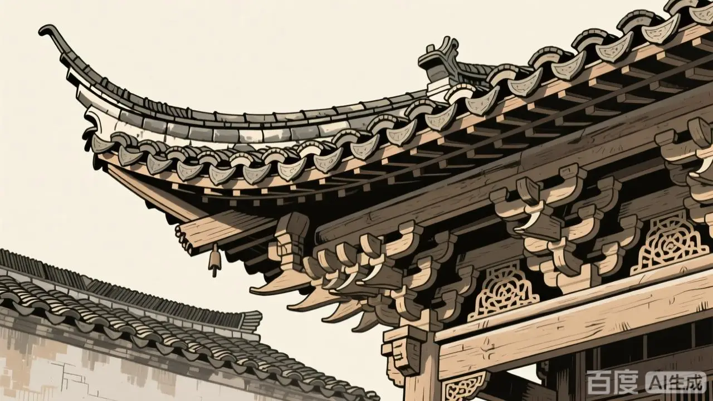
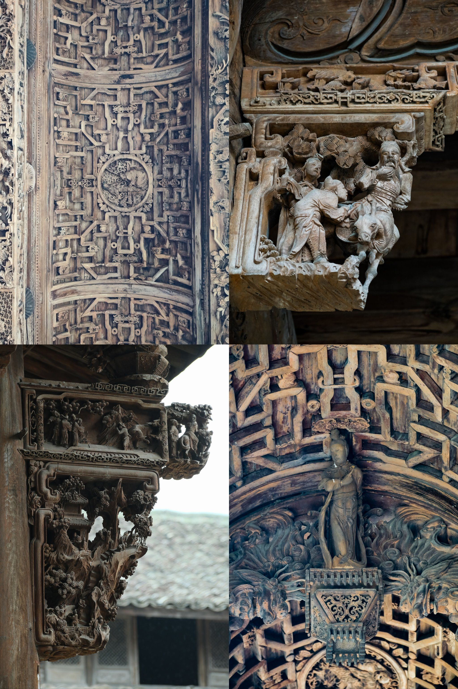
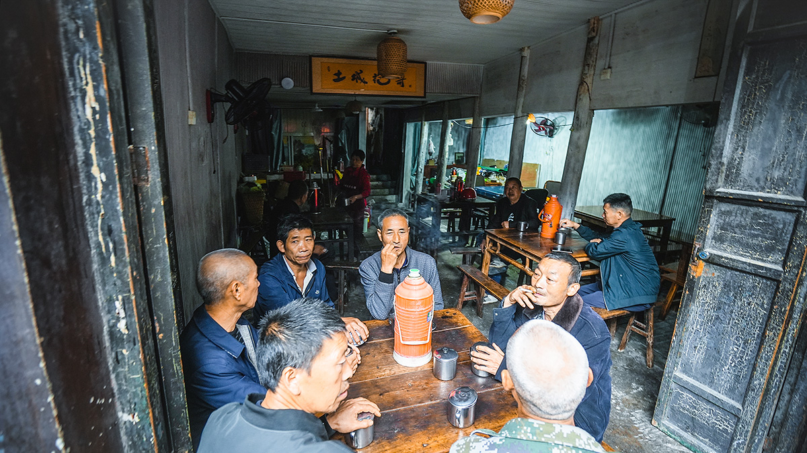
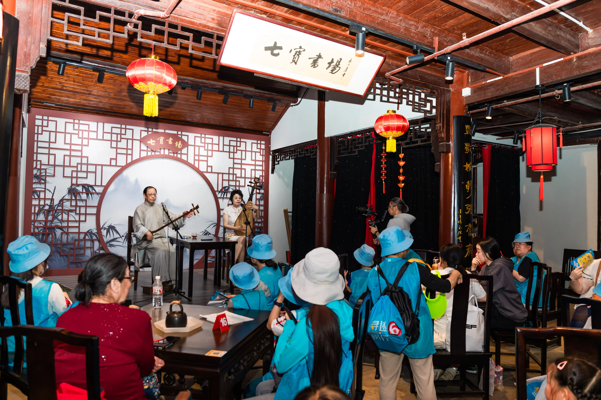
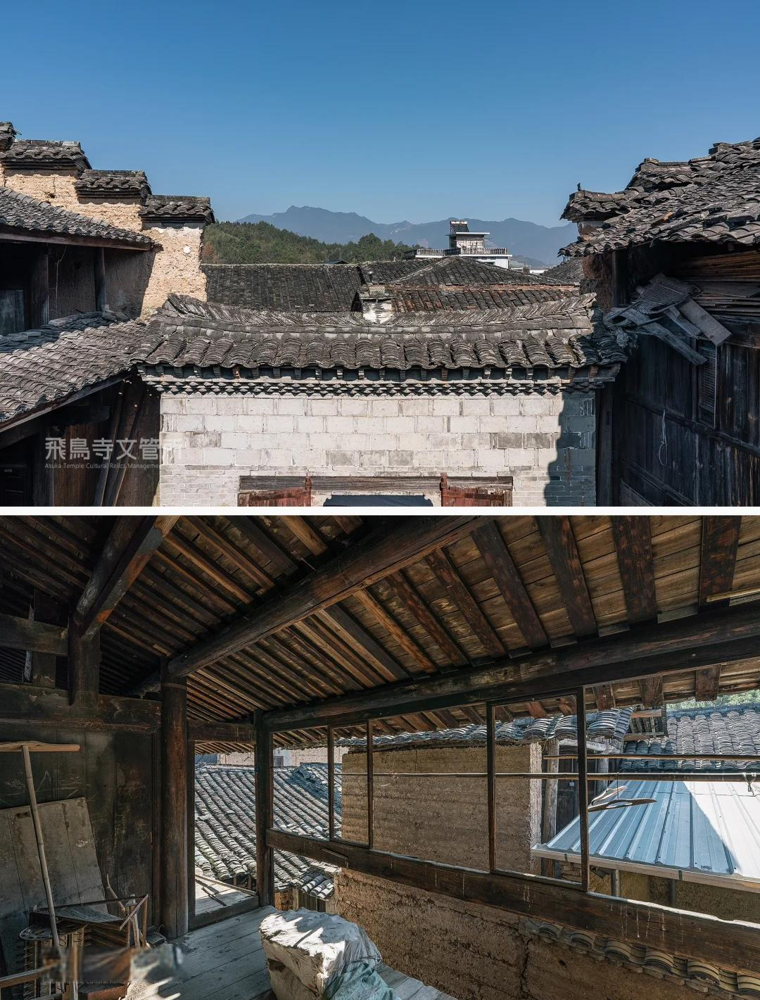

走马古镇 · 千年驿道

关于走马
走马古镇是重庆市九龙坡区下辖镇，东临白市驿镇，西靠璧山区，南接江津区，北连金凤镇，面积29.9平方公里，户籍人口2.2万人。
古镇始建于东汉，明清时期因成渝古驿道成为交通要冲，现存清代驿铺建筑群及孙家大院等23处文保单位。
古镇以驿道文化著称，现存青砖灰瓦石板路格局与明代关武庙戏楼，街巷纵横分布茶馆、商铺等活态建筑。

走马古镇是重庆市九龙坡区下辖镇，东临白市驿镇，西靠璧山区，南接江津区，北连金凤镇，面积29.9平方公里，户籍人口2.2万人。
古镇始建于东汉，明清时期因成渝古驿道成为交通要冲，现存清代驿铺建筑群及孙家大院等23处文保单位。
古镇以驿道文化著称，现存青砖灰瓦石板路格局与明代关武庙戏楼，街巷纵横分布茶馆、商铺等活态建筑。
Historical Timeline
古镇始建，因地势开阔，驿马奔走，故名"走马"。是巴蜀通往中原的重要节点。
商旅渐盛，茶马交易兴起，古镇雏形初备，民间故事在驿站间口耳相传。
关武庙戏楼建成，街巷格局成型，成为成渝古道之上重要的"打尖宿夜"之地。
驿铺建筑群、孙家大院落成，茶馆林立，"一脚踏三县"的地理格局成就繁华盛景。
古镇风貌得以完整保存，成为川东民俗活态博物馆。
2006年走马民间故事入选首批国家级非遗，古镇成为文旅融合典范。
Three Cultural Labels

镶嵌在川东民居肌理之中的静默史书，匠人手中的诗意。

茶客们一壶清茶讲半日，国家级非物质文化遗产的口口相传。
南来北往的密令、商旅、奇案，化作沉浸式剧本走进当代。

古镇茶馆是走马生活的灵魂。木桌、竹椅、盖碗茶，说书人手中的折扇一开，便是半部明清传奇。
从神话传说到风物典故，从动植物趣事到市井琐谈，茶客们听得津津有味，孩童在石板路上嬉戏，时间仿佛在这里慢了下来。
这里的每一杯茶，都泡着古道的旧时光；每一段故事，都连着一座古镇的根。

穿斗式木结构是川东民居的灵魂。门楣花窗、梁柱牛腿、屏风隔扇之上，都是匠人留下的雕花。
关武庙戏楼飞檐翘角，孙家大院青砖灰瓦，每一处都凝结着先人的审美与智慧。
走在窄巷里，仿佛仍能听见百年前马蹄叩击青石板的清脆回响。
重庆主城区驾车约40分钟可达；可乘公交至九龙坡走马镇站。古镇内步行游览为佳。
四季皆可来访。春赏新茶，夏听蝉声，秋观木雕落叶，冬品热茶围炉夜话。
关武庙戏楼听书、孙家大院寻雕、茶馆品盖碗、驿道走青石、剧本杀沉浸体验。